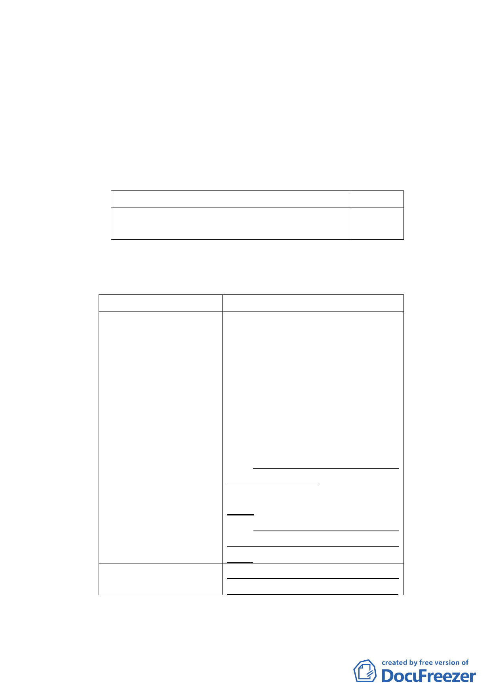

臺北好好看』開發計畫案」三項容積獎勵（廣場式開放空
間、地面人行通道、挑空室內開放空間）。
廣場式開放空間核計獎勵容積樓地板面積之 B 值為
街廓編號 C2 基地法定容積率 300%，C 值為原計畫適用
綜合設計放寬之 1/2。
2. 取消容積增加上限
原計畫
新計畫
依本計畫及其他規定得增加容積者，其 刪除。
增加容積之總合不得超過基準容積 50%。
（二） 都市設計管制
1. 規定地下層開挖規模
原計畫
新計畫
二、土地使用強度 二、土地使用強度
(三)地下層開挖規模 (三)地下層開挖規模
本計畫區內建
本計畫區內建築基地地下
築基地地下層開挖 層開挖規模以各使用分區及各
規模以各使用分區 公共設施用地之法定建蔽率加
及 各公 共設 施用 地 10%， 且以 不 超過 80%為 原
之 法 定 建 蔽 率 加 則。採用綜合設計放寬規定
10% ， 且 以 不 超 過 者，地下層最大開挖規模，應
80%為原則。採用綜 再減 10%。
合設計放寬規定
街廓編號 C2 娛樂區（供
者，地下層最大開挖 觀光旅館使用）內建築基地地
規模，應再減 10%。 下層開挖規模以法定建蔽率加
15%，且以不超過 80%為原
則。建築基地並應兼顧地面層
空間品質及基地保水設施功
能。
本計畫區建築基地應依建築技
術規則綠建築專章規定辦理。
2.公共開放空間配置基準放寬規定
-6-